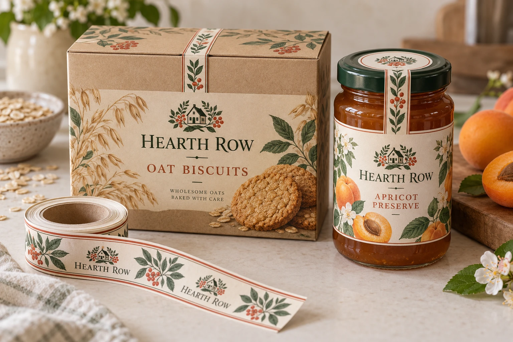

A neatly attached sticker may not change when a package opens. It may cover the top of a lid without crossing its junction, or cross one flap while a different opening remains available. Purchasing needs the intended opening behavior, not just the word seal.
Identify the ordinary opening path and the visible change the label is expected to show. Then review placement and construction on the actual closed package. This is an opening-evidence planning method, not a food-safety or tamper-proof claim.

AI-generated packaging planning example. Hearth Row is fictional; this is not a customer job, security proof or measured test.
Draw the opening junction first
Use photos of the actual package closed and opened by its normal method. Mark the moving part, the stationary landing surface and the junction between them. Record any other routine access route rather than treating a single strip as coverage of the whole package.
| Review field | Decision or observation to record |
|---|---|
| Intended opening | Lid lift, cap rotation, flap movement or another actual mechanism |
| Strip placement | Which surfaces are joined and whether the strip truly crosses the junction |
| Initial appearance | What an unopened finished pack should look like |
| Deliberate first opening | Tear, disruption, residue or another agreed visible change |
| Intact removal | Whether the feature can detach and be reapplied without the intended evidence |
| Ordinary handling | Whether packing and transport create misleading damage before opening |
Do not fill the observations from an illustration. Make the review on identified production-representative packages and keep the sample identity with the result. The number of samples, conditions and acceptable behavior belong in the actual packaging team's plan.
Distinguish the construction from its advertised effect
A plain paper strip, destructible material and a pattern-revealing security construction are different proposals. A supplier's description must identify the actual material and application limits. For example, HERMA's checkerboard material page describes a particular pattern-revealing construction and explicitly limits food contact. That example is not a recommendation to place it against food or a confirmation that it is supplied here.
The practical implication is to ask what behavior the proposed construction is designed to produce on your external package surface. Do not infer that every permanent adhesive will tear, that every film leaves a residue or that every printed strip is a security device.
Include the ordinary customer opening
Opening should remain understandable for the intended user. Compare an opening cue with the effort required to remove it and the effect on the main brand label or closure. A strip that tears during packing may create false concern; one that stays intact during normal opening may fail the stated purpose.
If the package already has a primary closure feature, record its job separately. A brand may need only a presentation sticker, or a retailer may require a specific external opening cue. Obtain the actual requirement instead of adding unsupported claims to the artwork.
Use the deli-tub bridge comparison for lid geometry, hot-sauce strip versus band guide for a bottle closure and the custom-shape review for the separate cut-path decision.
Short answer
Use seal labels when a package needs a visible closing point across a lid, cap, box flap or container edge. The best design depends on the surface, opening direction, storage environment and whether the label is applied by hand or on a roll.
Common seal label formats
| Format | Typical package | Design notes |
|---|---|---|
| Strip seal | Bakery boxes, takeaway cartons, paper bags. | Needs enough length to bridge both sides of the opening. |
| Round seal | Jar lids, dessert cups, cans and gift food packs. | Simple to apply and useful for logo-forward packaging. |
| Tab seal | Clamshell containers, lids and box flaps. | Can include an opening direction or short message. |
| Custom die-cut seal | Premium food, bakery, honey, sauce and gift packs. | Requires clean bleed, safe area and shape approval. |
Choose adhesive by surface
A seal label crosses edges and curves more often than a flat front label, so adhesive choice matters. Paper boxes, kraft surfaces, glossy cartons, PET cups, glass jars and chilled containers may need different adhesives. Share a package photo and storage condition before production.
Plan the shape before artwork
Seal labels should be designed around the package opening. If the sticker is too short, it will not bridge the opening. If it is too wide, it may wrinkle around a lid or curved box edge. A simple package measurement can make the first proof much closer to production-ready.
What to send for a seal label quote
| Field | Requirement to confirm |
|---|---|
| Package photo | Show the closed package and the exact sealing position. |
| Label size | Length, width, diameter or requested custom shape. |
| Surface type | Paper box, kraft bag, glass jar, plastic cup, PET container or pouch. |
| Use condition | Dry shelf, chilled display, delivery, freezer or humid handling. |
Related guides
For shape planning, read custom die-cut labels. For adhesive choices, review removable vs permanent adhesive. If seal labels are supplied on rolls, check roll direction before ordering.
Keep the approval specific to the package
Changing a cap supplier, carton coating or landing position can change what the strip contacts. Retain the reviewed package identity and placement reference with the label construction. If either changes, ask the responsible reviewer whether the existing observations still apply. A matching logo does not establish an unchanged opening mechanism.
Send the relevant project details
Discuss an external package seal label with closed/open package photos, surface details, proposed position, quantity and the intended opening evidence. State the actual buyer requirement and unresolved observations. The form opens an email draft; use listed email or WhatsApp for files. Material suitability, available construction and any claim require their own confirmation.